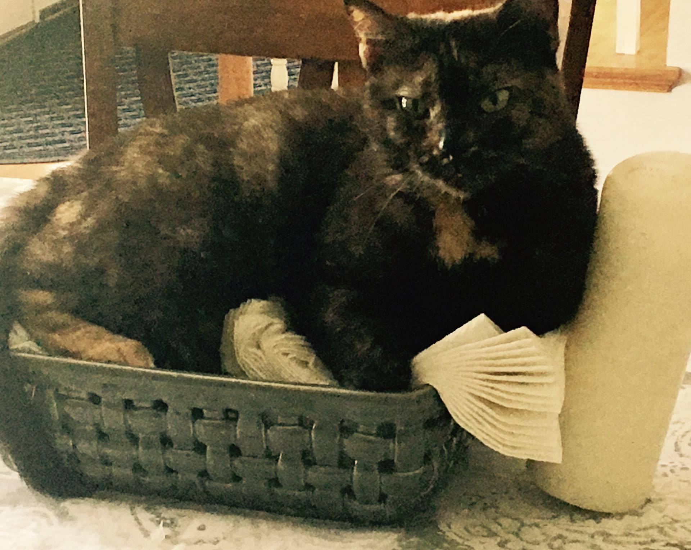
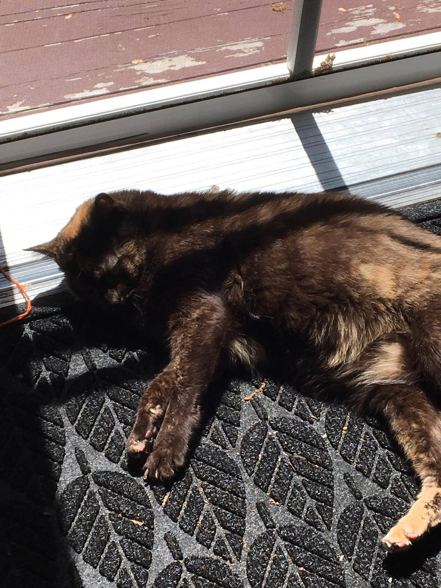

Although this is not my cat, I'd have to say that this is one of the cutest videos I've ever seen. However, I have to say that we have caught my cat sleeping in weird places too many times to count.
Unfortunately, Sophie had just woken up as we were taking the photo, but, as you can see, she fell asleep in this position. I don't know about you, but this does not look comfortable to me. This is also not the most flattering photo of her, but a cute one none the less.
After searching for her for 30 minutes, we found my cat in this napkin basket. We must've woken her up from her nap, because when we found her she was cuddled up in the napkins and yawning.
Lastly, this is one of her favorite sleeping spots. It's on the doormat in front of our deck doors. This provides Sophie with warm sun, and even a small rug for her to lay on. I honestly think she could fall asleep anywhere.